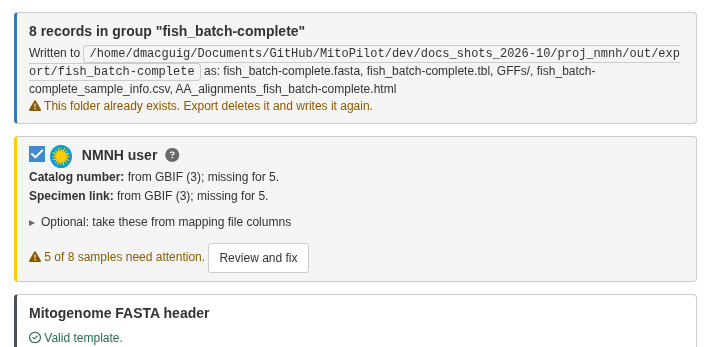
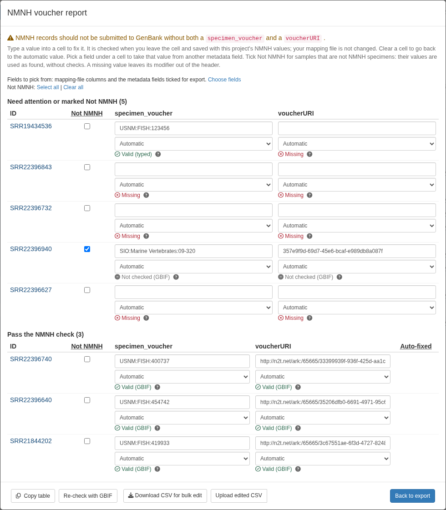

This page is for GenBank submission containing specimens from the Smithsonian National Museum of Natural History (NMNH). Other users can skip it.
NMNH asks that each GenBank record from one of its specimens carry the specimen voucher and the specimen’s EZID in the following format:
[specimen_voucher=USNM:FISH:487075] [voucherURI=http://n2t.net/ark:/65665/30f303846-9d23-4069-881e-e43ff718ef9f]Not sure how to find the specimen EZIDs for your samples? Consult your department’s data manager.
specimen_voucher is a standard GenBank source modifier.
voucherURI is an NMNH requirement and is not on GenBank’s
list of source modifiers.
Steps
-
Turn it on. In Export Data, tick
NMNH user. MitoPilot adds
[specimen_voucher={nmnh_specimen_voucher}] [voucherURI={nmnh_voucherURI}]to the FASTA header templates. If the template already has either modifier, it asks before replacing it. The switch is remembered when the header template is saved. - Check the status. The NMNH box shows how many samples need attention, or “All N samples ready”.
- Review and fix samples in the voucher report (below).
- Export as usual.

Where the values come from
For each sample, MitoPilot takes the first valid value from, in order:
- your mapping file (pick the columns under Optional: take these from mapping file columns)
- the linked GBIF record
- the NCBI BioSample
- the GEOME record
A voucher with no EZID is looked up in GBIF to find the EZID, and an EZID with no voucher is looked up to find the voucher. Linking the samples first (see Linking records across databases) fills in more values.
What is checked and fixed
-
Voucher: must be
USNM:<collection>:<catalog>with an NCBI collection code (FISH,Birds,MAMM,Herp,IZ,ENT,Botany), orUS:<catalog>for botany. Letter case and repeatedUSNMprefixes are fixed. -
EZID: written as
http://n2t.net/ark:/65665/3...and checked against GBIF. A tissue EZID is replaced with its parent specimen’s, and the voucher must match the GBIF record.
The voucher report
Review and fix (or Review NMNH values) opens the report. It has two tables: Need attention…, and Pass the NMNH check. Each cell shows the value, where it came from, and the result. The Auto-fixed column marks samples whose values MitoPilot corrected.
To fix a sample:
- Type a value into the cell. It is checked when you leave the cell and saved in the project; your mapping file is not changed. Clear the cell to go back to the automatic value.
- Pick a field under the cell to take the value from another mapping-file column or metadata field, or None to leave the modifier out.
- Tick “Not NMNH” for samples that are not NMNH specimens. Their values are used as found, without NMNH checks.
- Click the sample ID to open its metadata; Back to voucher report returns.
- To easily edit many samples, use Download CSV for bulk edit, edit the file, then Upload edited CSV.
